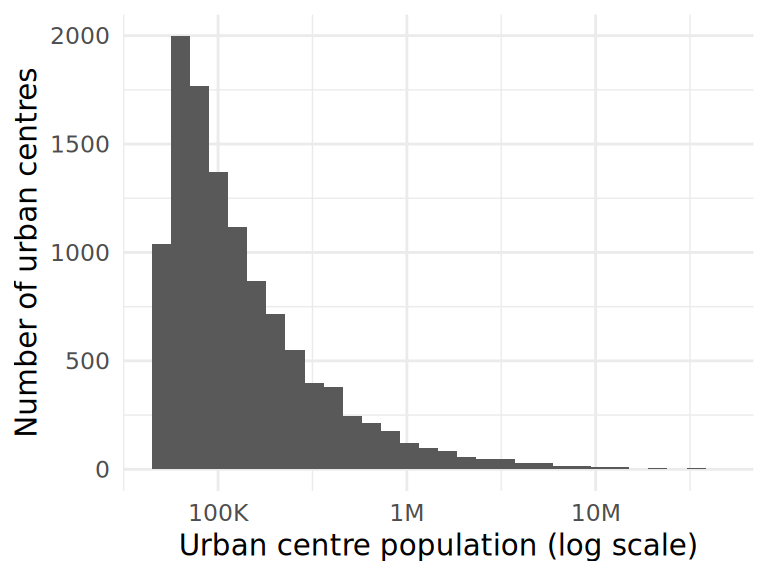
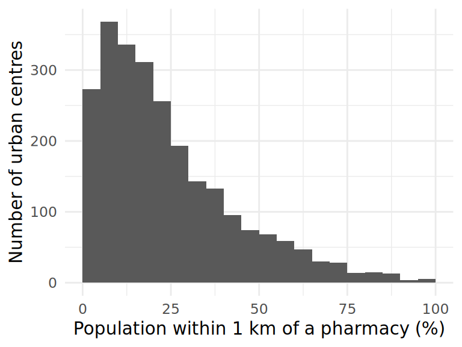
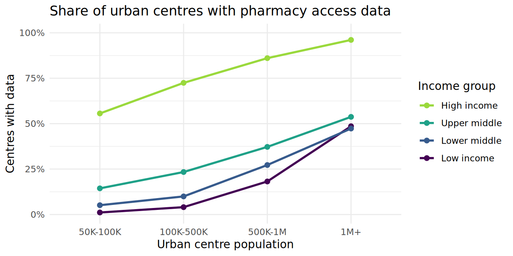
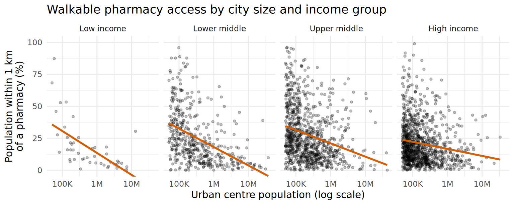
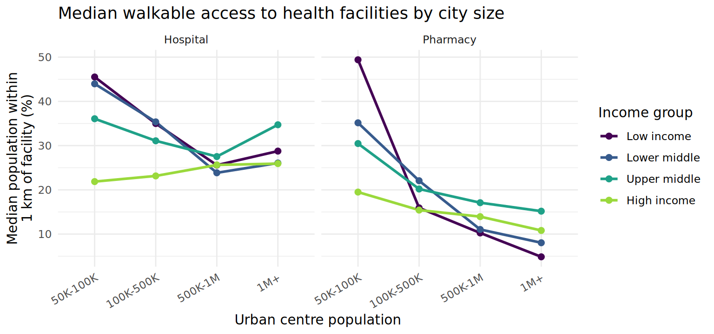

| Income group | 50K-100K | 100K-500K | 500K-1M | 1M+ |
|---|---|---|---|---|
| Low income | 537 | 445 | 33 | 35 |
| Lower middle | 2243 | 1949 | 213 | 186 |
| Upper middle | 1945 | 1775 | 258 | 201 |
| High income | 748 | 657 | 86 | 102 |
Bigger city, farther pharmacy?
Report on walkable pharmacy access in urban centres worldwide
Abstract
Walkable access to a pharmacy is a basic measure of everyday access to medicines. Using the Global Human Settlement Layer Urban Centre Database, which describes 11,422 urban centres worldwide, we explored how the share of a city’s population living within 1 km of a pharmacy relates to city population and World Bank income group. We first found that pharmacy data is far from complete: it is available for most urban centres in high-income countries but for only 4% of those in low-income countries, and availability rises sharply with city size. Among the 2,465 urban centres with data, larger cities had a smaller share of residents near a pharmacy in every income group. This negative relationship was steepest in low- and lower-middle-income countries and weakest in high-income countries, and the same pattern appeared more weakly for hospitals. Because data availability itself depends on income and size, these results describe mapped pharmacies and should not be read as definitive measures of access.
Introduction
Pharmacies are often the most frequent point of contact people have with the health system. They supply medicines and, in many countries, basic advice and care. How far people live from a pharmacy is one simple, comparable measure of everyday access to medicines. Research on global access to health care has shown that travel time to facilities varies widely across and within countries (Weiss et al. 2020). However, much of this work focuses on rural areas, and less attention is paid to differences between cities. Cities around the world range from 50,000 to more than 40 million people. It is not obvious whether a very large city offers better walkable access, because it has more facilities, or worse access, because its population is spread over a much larger area.
Our research question is:
How does the share of an urban centre’s population living within 1 km of a pharmacy relate to the centre’s population size, and does this relationship differ across World Bank income groups?
We expected urban centres in higher-income countries to have better pharmacy access, and larger centres to have lower access, with a stronger size effect in lower-income countries.
We use the Health theme of the GHS Urban Centre Database (Mari Rivero et al. 2026), as distributed through the TidyTuesday project (Data Science Learning Community 2026).
Data
Data source and collection
The Global Human Settlement Layer Urban Centre Database (GHS-UCDB) is produced by the European Commission’s Joint Research Centre (Mari Rivero et al. 2026). Urban centres are defined from satellite-derived population and built-up area grids using the Degree of Urbanisation method: a cluster of contiguous, densely populated grid cells with at least 50,000 inhabitants is an urban centre. This gives a consistent definition of a “city” across countries, independent of administrative boundaries. The JRC combined these boundaries with open-source geospatial data on hospital and pharmacy locations (from 2024) and computed the modeled share of each centre’s 2025 population living within 1 km of a facility. The TidyTuesday curators downloaded the Health theme file and recoded the source’s "-" entries as missing values.
Each observation is an urban centre. The dataset contains 11,422 urban centres and 17 variables.
Variables
The variables we use are:
- Pharmacy share (
HL_SHP_PHA_2025): percentage of the urban centre’s population living within 1 km of a pharmacy (0-100). - Hospital share (
HL_SHP_HOS_2025): percentage of the population living within 1 km of a hospital (0-100), used for comparison. - Population (
GC_POP_TOT_2025): total population of the urban centre in 2025. - Income group (
GC_DEV_WIG_2025): World Bank income group of the country the centre is in (low, lower middle, upper middle, high). - Size class: a variable we created by binning population into 50K-100K, 100K-500K, 500K-1M, and 1M+ people.
Data cleaning
We renamed the variables we use to shorter, readable names and dropped the remaining columns. We removed 9 urban centres with a missing income group, since income group is central to our question. We ordered income group from lowest to highest, and created the size class variable to compare groups of similarly sized cities. Because city populations are highly right-skewed (the median is about 100,000 people, but the largest centre, Guangzhou, has about 43 million), we display population on a log scale.
The most important cleaning decision concerned missing values. The pharmacy share is missing for 8,948 of the 11,413 urban centres (78%). The source does not tell us whether a missing value means that no pharmacy was mapped in the city or that the data was not collected, so we cannot treat missing as zero. We therefore analyze the share only for the 2,465 centres with data, but we first examine which centres have data.
Exploratory data analysis
Figure 1 shows the distributions of the two numerical variables in our research question. Population (Figure 1 (a)) is strongly right-skewed even on a log scale: most urban centres are just above the 50,000-person threshold, and only a few have more than 10 million people. Among centres with pharmacy data, the pharmacy share (Figure 1 (b)) ranges from nearly 0% to 99%, with a median of 19.1%. It is also right-skewed: in most cities, fewer than a third of residents live within 1 km of a mapped pharmacy.


Table 1 shows how many urban centres fall into each income group and size class. Most urban centres in the dataset are in lower-middle- and upper-middle-income countries, and most have fewer than 500,000 people.
Figure 2 shows that whether a centre has pharmacy data depends strongly on both income group and size. Almost every high-income city with more than one million people has data, while only about 1% of the smallest low-income centres do. Within every income group, larger cities are more likely to have data. In total, only 47 low-income urban centres have pharmacy data. This means that the cities we analyze are not a representative sample of the world’s urban centres: they over-represent large, wealthy cities.

Results
Figure 3 shows the main relationship of interest: pharmacy share against population (on a log scale), separately for each income group. The lines summarize the overall trend in each panel.

In all four income groups, the share of residents near a pharmacy decreases as city size increases. The strength of this negative relationship differs by income group (Table 2). The correlation between log population and pharmacy share is strongest in low-income countries (r = -0.62) and lower-middle-income countries (r = -0.44), and weakest in high-income countries (r = -0.16). The low-income estimate is based on only 47 centres, so it is much less certain than the others.
| Income group | Centres | Median share (%) | Correlation (r) |
|---|---|---|---|
| Low income | 47 | 10.8 | -0.62 |
| Lower middle | 455 | 19.9 | -0.44 |
| Upper middle | 899 | 22.8 | -0.27 |
| High income | 1064 | 16.5 | -0.16 |
Contrary to our first hypothesis, high-income centres do not have the highest pharmacy shares. Their median share (16.5%) is lower than in upper-middle- and lower-middle-income centres. Table 3 helps explain this by comparing cities of similar size. Small cities (50K-100K) in lower-income countries that have data have high pharmacy shares, but the share drops quickly as size increases: in low-income countries, the median falls from about 49% in the smallest centres to about 5% in centres with more than a million people. In high-income countries, the decline is more gradual, from about 20% to 11%. So, in high-income countries, access is more similar across city sizes, while in lower-income countries the largest cities have the lowest walkable access to mapped pharmacies.
| Income group | 50K-100K | 100K-500K | 500K-1M | 1M+ |
|---|---|---|---|---|
| Low income | 49.4 (6) | 15.9 (18) | 10.3 (6) | 4.9 (17) |
| Lower middle | 35.2 (115) | 22.1 (194) | 11.0 (58) | 8.0 (88) |
| Upper middle | 30.5 (280) | 20.2 (415) | 17.1 (96) | 15.2 (108) |
| High income | 19.5 (416) | 15.4 (476) | 13.9 (74) | 10.8 (98) |
Some of the largest cities show signs that their facilities are under-mapped rather than truly absent. For example, the urban centre named Guangzhou, the largest in the data with about 43 million people, has only 2 recorded pharmacies but 665 recorded hospitals, so just 0.05% of its population lives within 1 km of a mapped pharmacy. Pharmacy data is also missing for all but 16 of China’s 1,974 urban centres. Values like this are a reminder that the data measures mapped pharmacies.
To check whether this pattern is specific to pharmacies, we compared it with hospitals, for which data is available for many more centres. Figure 4 shows the median share by size class for both facility types. Median hospital shares are higher than pharmacy shares in every income group. In low- and lower-middle-income countries, the share near a hospital also declines with size, from about 45% in the smallest centres to about 25% in centres with 500,000 to 1 million people, before levelling off. In high-income countries, however, hospital access is similar across sizes and even rises slightly in larger cities. So, for both types of facility, larger cities in lower-income countries have lower walkable access, while high-income countries show little or no size penalty.

Discussion
We set out to explore how walkable pharmacy access relates to city size and income group. Among urban centres with pharmacy data, larger cities consistently had a smaller share of residents living within 1 km of a pharmacy, and this negative relationship was much stronger in low- and lower-middle-income countries (r around -0.6 and -0.4) than in high-income countries (r around -0.2). This partly supports our second hypothesis. Our first hypothesis was not supported: high-income centres did not have the highest median pharmacy share. Instead, high-income countries stood out for having more uniform access across city sizes. A possible explanation is that the largest cities in lower-income countries grew quickly and spread over large areas, so that services did not keep pace with their growth, while cities in high-income countries have older, more evenly distributed retail networks. Our data cannot test this explanation.
The most important limitation is missing data. Pharmacy data is missing for most urban centres, and whether it is missing depends strongly on both income group and size (Figure 2), the same variables in our research question. Crowd-sourced and open geographic data are known to be less complete in some parts of the world (Barrington-Leigh and Millard-Ball 2017), and implausibly low values for very large cities, such as Guangzhou, suggest under-mapping. This threatens the validity of our results in two ways. First, the 47 low-income centres with data are mostly the largest cities, so the low-income results may not describe typical low-income cities. Second, if pharmacies in large cities are less completely mapped than those in small cities, part of the negative size relationship may reflect data completeness rather than real access. In addition, the share within 1 km is a modeled estimate based on gridded population data, the facility counts (2024) and population estimates (2025) come from different years, and income group is measured at the country level, which hides large differences between and within cities in the same country. Finally, our results describe associations only and do not show that city size or income causes differences in access.
To improve this analysis, we would compare pharmacy coverage with an independent count of pharmacies from national registries for a few countries, to estimate how much is missing. We could also look within individual large countries with many centres in the data (such as the United States, Brazil, and India) to see whether the size pattern holds when income group is held constant at the country level.
Reflection
The biggest lesson of this project was that the first question to ask about a variable is not “what does it show?” but “who is missing from it?” Our first scatterplot of pharmacy share against population looked clean and convincing, and we had started drafting conclusions about access in low-income countries before Abby counted the non-missing values by income group and found that only 47 of more than 1,000 low-income urban centres had pharmacy data. That discovery reshaped the project. We moved the missing data analysis to the start of the Data section, rewrote our hypotheses as statements about mapped pharmacies, and spent more time on limitations than we had planned. Spotting Guangzhou’s near-zero pharmacy share reinforced the same lesson: one implausible value told us more about data quality than any summary statistic.
Presenting and listening to other teams also changed our report. During our presentation, a classmate asked whether high-income cities have worse access, since their median share was lower than for middle-income cities. We did not have a good answer in the moment, and this question led us to build Table 3, which compares cities of similar size and shows that the difference is mostly about how access changes with size. Watching other teams, we noticed that the clearest presentations showed one main plot per slide with a title that stated the takeaway, which is why we rewrote our figure captions as findings rather than descriptions.
Our collaboration worked best when we followed our team contract and divided work by section, with each person owning one or two code cells and the narrative that goes with them. Holtzmann set up a shared ggplot theme early, which kept our figures consistent without anyone having to coordinate colors later. Our main challenge was merge conflicts in index.qmd during the week before the write-up was due, when two of us edited the cleaning code at the same time and one of us renamed a variable that the other’s plot depended on. We resolved it on a call, and afterward we agreed to always pull before starting work, to commit small changes often with informative messages, and to post in our group chat before changing shared code such as the clean-data cell. We also learned to re-render the whole project before pushing, after a broken inline code reference made the website fail to build on GitHub.
If we did this project again, we would check missingness and data coverage for every key variable during the proposal stage, before committing to a research question. We would also schedule a mid-project meeting to read the full report together, since several of our transitions between sections were written by different people and only came together at the end. Finally, we would decide on variable names and object names as a team at the start, which would have prevented most of our merge conflicts.
References
Barrington-Leigh, Christopher, and Adam Millard-Ball. 2017. “The World’s User-Generated Road Map Is More Than 80% Complete.” PLOS ONE 12 (8): e0180698. https://doi.org/10.1371/journal.pone.0180698.
Data Science Learning Community. 2026. Health Metrics in Urban Centres Worldwide. TidyTuesday, week of September 29, 2026. https://github.com/rfordatascience/tidytuesday/blob/main/data/2026/2026-09-29/readme.md.
Mari Rivero, Ines, Michele Melchiorri, Pietro Florio, et al. 2026. “GHS-UCDB R2024A – GHS Urban Centre Database 2025.” Dataset. European Commission, Joint Research Centre. https://doi.org/10.2905/1a338be6-7eaf-480c-9664-3a8ade88cbcd.
Weiss, Daniel J., Andy Nelson, Carlos A. Vargas-Ruiz, et al. 2020. “Global Maps of Travel Time to Healthcare Facilities.” Nature Medicine 26 (12): 1835–38. https://doi.org/10.1038/s41591-020-1059-1.